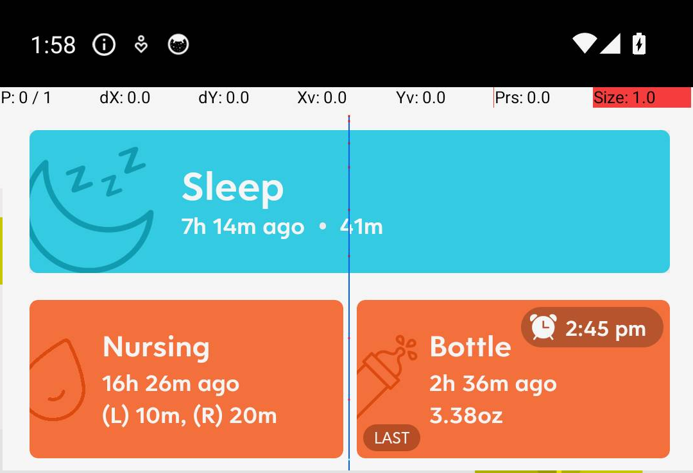

Home > HuckleberryAPI
HuckleberryAPI

HuckleberryAPI aims to provide a custom API for the Huckleberry baby-care app, which currently lacks native API support. This project enables programmatic access to app features, by leveraging Android emulation and Tesseract OCR.
(huckapi) tsbertalan@tian:~$ huckapi get-status
{ "bottle": "2h 36m ago 3.38 oz", "bottle_alarm": "2:45 pm", "diaper": "3h 14m ago - Pee", "growth": "6 days ago - 1ft10.8in - 10lbs 8oz - 14.", "nursing": "16h 26m ago (L) 10m, (R) 20m", "sleep": "7h 14m ago -- 41m" }
It's JSON, so you can pipeline it to e.g. jq for further processing:
(system) tsbertalan@tian:~$ huckapi get-status | jq ".bottle_alarm" "2:45 pm"
MCP
I expose a simple MCP server for fun:

--help
(huckapi) tsbertalan@tian:~$ huckapi --help usage: huckapi [-h] [--serial SERIAL] [--out OUT] [--package PACKAGE] [--verbose] [--timeout TIMEOUT] [--creds CREDS] [--tab-choice {home,reports,child}] [--swipe-duration SWIPE_DURATION] [--tap-delay TAP_DELAY] [--invert-ocr] {take-screenshot,launch-app,go-home,go-tab,check-foreground,switch-to-app,read-screen,list-buttons,is-welcome,is-signin,is-login,is-requesting-notification,skip-welcome,auto-signin,send-csv,get-status,start-emulator,stop-emulator,stream-emulator} HuckleberryAPI Android device utility positional arguments: {take-screenshot,launch-app,go-home,go-tab,check-foreground,switch-to-app,read-screen,list-buttons,is-welcome,is-signin,is-login,is-requesting-notification,skip-welcome,auto-signin,send-csv,get-status,start-emulator,stop-emulator,stream-emulator} Action to perform take-screenshot: Capture a screenshot from the device and save to file (use --out to specify output file, default screenshot.png) launch-app: Launch the specified application package (use --package to specify package id) go-home: Navigate to the device home/launcher screen go-tab: Tap a specific tab in the app (use --tab-choice to specify tab: home, reports, child) check-foreground: Check which app/activity is currently in the foreground switch-to-app: Switch to the specified application package (use --package to specify package id) read-screen: Perform OCR on the current screen and list detected text blocks list-buttons: Perform OCR and list detected button-like elements on screen is-welcome: Check if the current screen is the welcome screen is-signin: Check if the current screen is a sign-in prompt is-login: Check if the current screen is a login screen (with email/password fields) is-requesting-notification: Check if the current screen is requesting notification permission skip-welcome: Attempt to dismiss the welcome screen by tapping the 'Skip' button auto-signin: Automatically fill in credentials and sign in (requires --creds JSON file with username and password) send-csv: Navigate to child tab, swipe up, and tap the CSV export button get-status: Get current device and app status start-emulator: Start an Android emulator (default AVD: Pixel_7_API_34) stop-emulator: Stop any running Android emulators stream-emulator: Start the MJPEG streaming server for the emulator (forwards all additional args to the streamer) options: -h, --help show this help message and exit --serial SERIAL, -s SERIAL ADB device serial to target (if omitted waits for any device) --out OUT, -o OUT Output file for screenshot (used with take-screenshot action) --package PACKAGE, -p PACKAGE Application package id (required for launch-app). Defaults to discovered package com.huckleberry_labs.app --verbose, -v Verbose output (prints raw dumpsys snippets for check-foreground) --timeout TIMEOUT, -t TIMEOUT Timeout seconds to wait for device boot / app foreground --creds CREDS Path to JSON credentials file for auto-signin (default: credentials.json) --tab-choice {home,reports,child} Tab to tap when using go-tab action --swipe-duration SWIPE_DURATION Duration (ms) for swipe actions like swipe-up --tap-delay TAP_DELAY Delay in seconds between taps when processing CSV rows --invert-ocr Invert screenshot colors before OCR (for read-screen action)
*